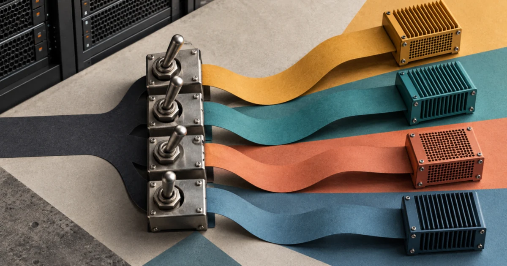
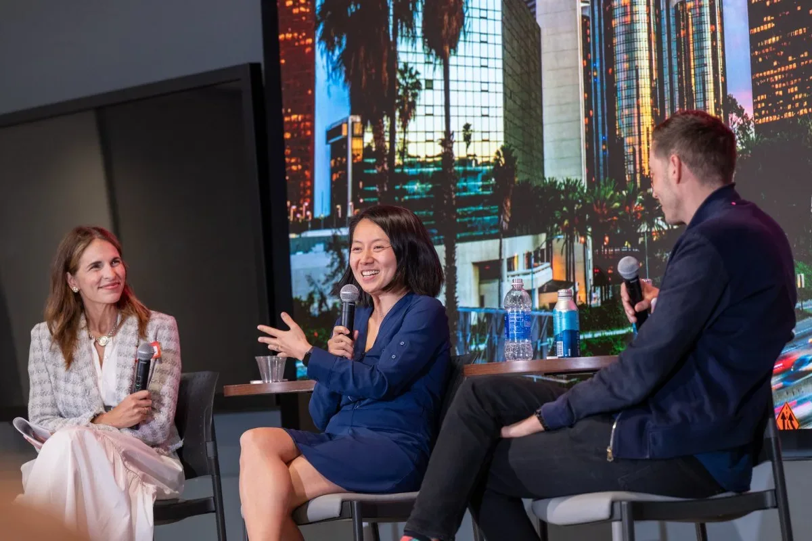
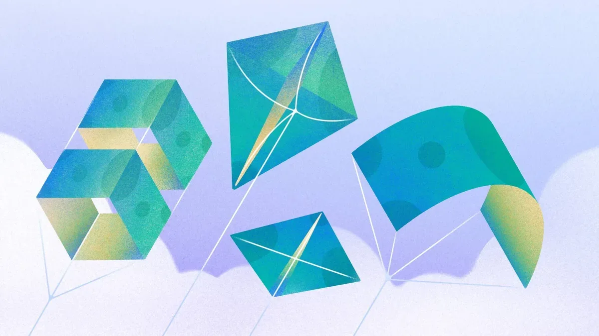

Исследования
Ai2 открыла AstaBrief 8B для научных отчётов со ссылками
Читать
Ai2
·2 окт. 2026 г.Релизы, исследования, продукты, инвестиции и AI-рынок.
Дайджест · 751 новостных материалов · Выпуск за 28 сентября — 3 октября 2026

Claude Frontier Academy готовит инженеров внедрения: очная подготовка, проверка навыков и 12 недель работы над корпоративным проектом.

Банк расширяет Claude Code и помощников для операций. В анонсе приведены действующие масштабы и отдельные планы на 2026–2027 годы.

Ai2 открыла стек MoE-обучения. Прирост 2,7 раза относится к конкретному тесту; проверки триллионного масштаба имеют ограничения.

OpenAI описала июльскую кампанию извлечения рассуждений. Разбираем подтверждённые наблюдения и ограничения атрибуции.
Постоянные агенты dots работают в облаке и подключаются к приложениям. Запуск идёт поэтапно, с правилами доступа и проверки действий.

Новая Sol вышла в API и Codex: вход $2, выход $10 за миллион токенов. OpenAI показала улучшения в коде и работе с документами.

Anthropic обновила Sonnet: прежние тарифы за токены, более быстрая генерация и меньшие расходы на часть задач в тестах компании.

Grok 4.7 доступна в Bedrock. Разбираем контекст, уровни рассуждения и выбор межрегионального профиля для запросов.

Holo4 объединяет экран, код и программные инструменты. Открытые веса и траектории позволяют проверить поведение агента.

NVIDIA и AWS: новые GPU-инстансы, ускоренный векторный поиск и статус Exemplar Cloud.

MoEngage купила Aampe — стартап, внедряющий ИИ-агентов для персонализации маркетинга

Google Home станет точнее: распознавание по одежде и звукам на видео — обновление с 23 июня

VCs оценили риски пузыря ИИ: что говорят Basis Set Ventures и M13

Голливуд избегает критики Big Tech: студии отказываются от фильма о главе OpenAI из-за инвестиций в ИИ

Oracle сократила 21 000 человек: ради строительства датацентров для ИИ компания берёт на себя $120 млрд долга.
Menlo Ventures поднял $3 млрд благодаря ставке на Anthropic: доля в $14 млрд, SPV и фонд Anthology

Menlo Ventures собрала $3 млрд — крупнейший фонд за 50 лет. Почему ставка на Anthropic оказалась решающей?

Claude Tag станет постоянным участником ваших Slack-каналов — читает чаты, выполняет задачи и следит за прогрессом команды.

Как GPT‑5 Pro помогла иммунологу найти объяснение трёхлетнему научному парадоксу

Claude Tag — это ИИ-помощник Anthropic, который постоянно находится в вашем Slack и запоминает контекст.

Как построить ИИ-ассистента для поиска пептидов на Amazon Bedrock

Midjourney переключилась с генерации изображений на медицинские сканеры — но эксперты сомневаются в заявленных возможностях.

Azure Copilot Observability Agent: агентный мониторинг для облачных систем в общем доступе

AWS показала, как строить мультитенантные ИИ-агенты с изоляцией, уровнями обслуживания и контролем затрат на Bedrock AgentCore.

Создатель Wikipedia заблокирован за попытку привести «консервативных» редакторов

Увольнение библиотекаря за Pride-стенд: как страх перед сообществом разрушает библиотечные принципы

До 26 июня — early bird на конференцию для основателей. Скидка до $190.

Sony оснастила Xperia 1 VIII ИИ-ассистентом, который пытается «улучшить» ваши фото — и почти всегда портит их

Утекший документ MSG: досье на критиков распознавания лиц